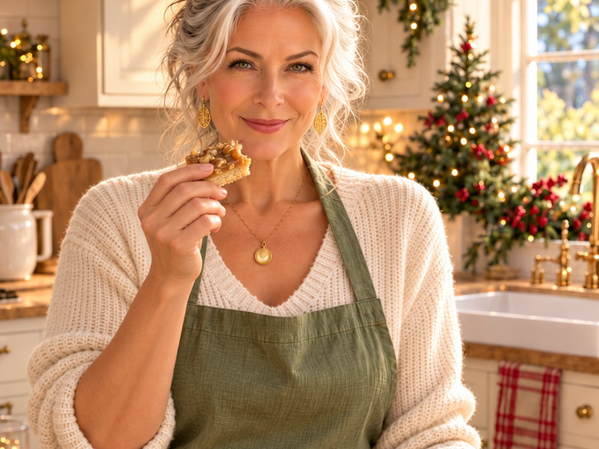

Christmas squares · 9 × 9 pan
Butterscotch Toffee Bars
Darling, if butterscotch makes you weak at the knees, these are for you. One pan, two layers, and they look far fancier than they are. A buttery shortbread base, a glossy melted-toffee top and a good handful of walnuts. Don't tell anyone how easy they are.

Ingredients
Base
- 1 cup all-purpose flour
- 6 tablespoons packed brown sugar
- ⅛ teaspoon salt
- ½ cup butter, margarine or vegan margarine
Toffee topping
- 6 oz bar butterscotch toffee (English toffee)
- 1 tablespoon corn syrup
- 1 tablespoon water
- 2 tablespoons butter, margarine or vegan margarine
- ⅛ teaspoon salt
- ⅔ cup chopped walnuts
Instructions
- Preheat the oven to 375°F (190°C).
- Make the base: crumble the flour, brown sugar, salt and butter together in a bowl until well mixed. Get your hands right in there. Nobody's watching.
- Press and bake: press the mixture into an ungreased 9 × 9-inch pan and bake for 10 minutes.
- Melt the toffee: while the base bakes, put the toffee, corn syrup, water, butter and salt in a saucepan over low heat. Break up the toffee as it goes so it melts nice and speedy. (And yes, you may sneak a piece.)
- Add the walnuts and pour the topping over the warm base, spreading it to the edges.
- Bake again for 8 to 10 minutes.
- Cool, then cut into 25 little squares… or 16. I won't tell.
🌿 Sage's Tip
Keep the heat low when you melt the toffee. It's tempting to turn it up and hurry things along, but toffee scorches quickly, and smaller pieces melt faster anyway. Patience now, glossy squares later.
Made with vegan margarine, these bars are dairy-free as long as your toffee is too, so check the label. They keep well in a tin, which makes them a lovely one for cookie trays, cookie exchanges and little gift boxes.